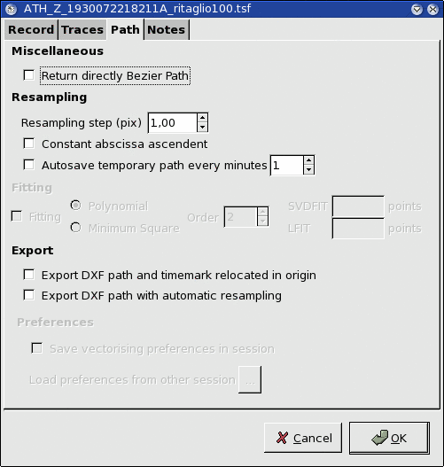
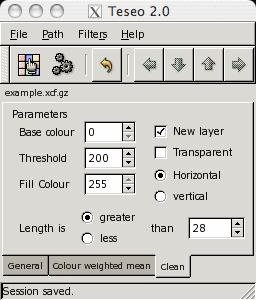

Teseo 2.0.8 user manual
Revision: 1.12
Stefano Pintore, Matteo Quintiliani
Istituto Nazionale di Geofisica e Vulcanologia, Roma, Italy
Preamble
This document contains the user manual of Teseo2 (© 2005).
Teseo2 is a software tool for accurate digitisation of seismogram traces from raster files and it is distributed with open source license (GPL).
Teseo2 is a plug-in for GIMP. The GIMP is the GNU Image Manipulation Program. It is a freely distributed piece of software for such tasks as photo retouching, image composition and image authoring. It works on many operating systems, in many languages.
Teseo2 is part of Sismos project at Istituto Nazionale di Geofisica e Vulcanologia (Italy) and his name is an acronym for "Turns the Eldest Seismogram in the Original One".
Official site at http://sismos.ingv.it/teseo/ and e-mail to teseo@ingv.it
Before to install Teseo2 you need to install GIMP 2.2 because Teseo2 is a GIMP plug-in.
Refer to GIMP installation at http://www.gimp.org/
Teseo2 is developed on Unix but it is available for several platforms, such as Linux, Windows and MAC OS X. You can find source and binary distributions at the Sismos project web site, http://sismos.ingv.it/teseo/
Follow instructions in INSTALL file from the distribution of your choice.
Teseo2 works on greyscale images saved in xcf format, the GIMP proprietary format that supports gzip or bzip2 compression.
To start Teseo2, start GIMP, open your xcf seismogram image and select Teseo-2 from Teseo menu
(figure 1). Alternatively, you can use the context menu on the image (right-clicking) or define a shortcut, see GIMP help.
Teseo2 associates to the working image some information related to seismogram paper, seismic event, station data and vectorisation parameters. All these information are saved in a Session and it has to be referred to a single seismic event.
First time Teseo2 starts on a image, it requires to create a new session. Fill the fields shown in the figures 2, 3, 4, and press on the OK button.
Session properties can be modified at any time selecting File Session Properties (Ctrl+P in Teseo2 context). New sessions related to other events in the same image can be created selecting File Session New (Ctrl+N). Teseo2 use a fixed session naming convention, so the user can't change session file name.
Session Properties (Ctrl+P in Teseo2 context). New sessions related to other events in the same image can be created selecting File Session New (Ctrl+N). Teseo2 use a fixed session naming convention, so the user can't change session file name.
When Teseo2 is starded on a image associated to more sessions, the user can choose the preferred one.
Figure 2:
Session window - Record tab
|
Figure 3:
Session window - Traces tab
|
Figure 4:
Session window - Path tab

|
Teseo2 trace vectorisation relies on GIMP Path tool, see the GIMP help for basic usage. Path tool permits to create piecewise cubic Bézier curves and polygonals.
WARNING: Teseo2 does not support closed paths and paths that have two or more components. Unfortunately, plug-in developers haven't available procedures to handle the last ones at this time :-(
WARNING: Seismogram must be oriented from left to right and top to bottom. If necessary you can use GIMP tools such as Flip or Rotate to modify the image ;-)
User can manually vectorise the traces by GIMP Path tool, she/he can create several piecewise cubic Bézier curves or polylines. Moreover, it is possible use the Teseo2 automatic path vectorisation tool.
Up to now, this tool offers a algorithm based on a weighted mean of the colour trace [1].
What effectively takes place is
an iterative procedure, whereby at each single iteration step the
next point is found by submitting to an algorithm a rectangular
portion of the image centred at the current point and the
information regarding the closest previous points.
In figure 5 are shown main parameters of the Teseo2 automatic path vectorisation tool:
- Forward: algorithm stop condition, maximum iteration number.
- Back: number of points to delete from the current path.
- Stop to the first guide: alternative stop condition, iteration stop when the abscissa is greater than first vertical guide position.
- Trace colour: base trace colour (black or white).
- Trace thickness: thickness average in pixels.
The colour weighted mean algorithm takes rectangle dimension in pixels from the tab shown in figure 6.
Figure 5:
Teseo window - General tab
|
Figure 6:
Teseo window - Colour weighted mean tab
|
Besides GIMP path manipulation, Teseo2 adds some useful operations in seismogram vectorisation.
In figure 7 is shown the Teseo2 Path menu. The operations are subdivided in three groups: operations on the current path, operations on all unlocked paths and operations on path that represent Timemark.
Some operations rely on GIMP vertical guides tool: you can place a vertical guide clicking on the ruler on the left of the image window and
dragging it on the image at the desired place.
- Current path operations
- Resample: resample path with parameter defined in figure 4.
- Fitting Bézier: fit path with a piecewise cubic Bézier curve.
- Split: split path at points defined by intersection beetwen path and GIMP vertical guides.
- Force Polyline: transform a path in a polyline. All the control points will be ignored.
- Snap: for each point compute a colour weighted mean in a thickness width square (figure 5).
- Unlocked only paths operations
- Align unlocked paths: align paths overlapping the first point of the next path to the last of the previous one. If the event was recorded over the paper boundary, this operation is used before trace export.
- Link unlocked paths: link paths with a straight line from last point of the previous path to first point of the next one. Useful to join several path of the same event.
- Timemark
- Timemark - Evaluate middle TMs: evaluate missing middle timemark of the current path and return vertical guides where they should be.
- Timemark - Add TMs from guides: add points where the guides intersect the current path.
Figure 7:
Teseo window - Path menu
|
WARNING: order in operations on multiple paths respects order of the GIMP Path tool, that is from bottom to top.
For example, executing a link on paths shown in figure 8 results a new path concatenating paths a, b and c, respectively.
Figure 8:
GIMP Path Tool - Path order
|
Teseo2 import and export several file formats as shown in figures 9 and 10:
- SVG: Scalable Vector Graphics [2].
- DXF: Drawing Interchange File Format [3].
- Trace: Teseo2 proprietary ascii format. It contains image reference and coordinate in pixels. Only polylines.
- ASCII: plain text file that contains the coordinates (x,y) sequence in millimeters. Only polylines.
- SAC: Seismic Analysis Code [4]. Evenly spaced binary SAC. Only polylines.
- SISMA: plain text file ''Sismogrammi Storici'' software compliant.
- Timemark: plain text file that contains coordinates (x,y) sequence identifying timemarks.
- Bézier: GIMP 1.0 Bézier path format. For downward compatibility.
- Examples: binary format that contains information for neural networks learning. Not available yet.
Up to now, SVG export is possible only by GIMP Path tool, DXF import is possible only on Teseo2 exported paths, SAC import is not implemented yet.
Figure 9:
Teseo Path Import
|
Figure 10:
Teseo Path Export
|
At the moment, Teseo2 provides one graphical filter useful to clean a seismogram.
What do we intend to clean a seismogram? Often, before to vectorise a record, it could be advantageous to remove horizontal traces that cross it but leaving the crossings where they are.
The base idea is to fill contiguous horizontal or vertical lines with a background colour.
WARNING: we suppose that the horizontal lines are parallels to the abscissa. You can estimate required rotation using GIMP Measure tool and then using GIMP Rotate trasformation tool to rotate effectively. See GIMP help.
In figure 11 is possible to see the parameters related to the Clean filter.
Figure 11:
Teseo Filter Clean

|
- Base colour: is the base colour of the trace. Value from 0 (black) to 255 (white).
- Threshold: is the maximum value of tolerance on base colour.
- Fill colour: is the colour used to fill contiguous lines belonging to the colour condition.
- New layer: is checked the current layer will be copied and the filters will be run on it.
- Transparent: is checked only the filled lines will be displayed, rest of the image will be transparent. This works only on layer with alpha channel.
- Horizontal/Vertical: check to fill horizontal or vertical line.
- Greater/Less: check to fill lines longer or shorter than length.
- Length: length of a single line on the image.
If you've never used this filter you should try it on the example image contained in your Teseo2 distribution.
Follow these steps:
- Open example.xcf.gz
- Select the ''Background'' layer and apply the filter using the following parameters:
- Base Colour = 0
- Threshold = 128
- Fill Colour = 255
- New layer checked
- Transparent uncheked
- Vertical checked
- Less checked
- Length = 9
- A layer named ''Background copy'' will be created.
- Select the ''Background'' layer and apply the filter using the following parameters:
- Base Colour = 0
- Threshold = 200
- Fill Colour = 255
- New layer checked
- Transparent uncheked
- Horizontal checked
- Greater checked
- Length = 28
- A layer named ''Background copy #1'' will be created.
- Select the layer named ''Background copy'' and set the layer parameter Mode to Multiply.
Before to close GIMP is a very good practice to do:
- Save session (Ctrl+S in Teseo2 context)
- Close Teseo2.
- Save xcf image, it contains all your paths and layers. xcf is your friend and gzip or bzip2 too...
- Close GIMP.
In Teseo2 sources has been integrated some other authors work, that are distributed respecting
their copyright or license:
- NEWUOA - NEWUOA is a software developped by M.J.D. Powell for unconstrained optimization without derivatives.
Author: M.J.D. Powell (mjdp@cam.ac.uk)
- cfortran.h - cfortran.h is an easy-to-use powerful bridge between C and FORTRAN. It provides a transparent, machine independent interface between C and FORTRAN routines and global data.
Author: Burkhard Burow (burow@desy.de) http://www-zeus.desy.de/ burow/cfortran/
- File formats
- ASCII
- 6
- Bézier
- 6
- DXF
- 6
| 6
- Examples
- 6
- SAC
- 6
| 6
- SISMA
- 6
- SVG
- 6
| 6
- Timemark
- 6
- Trace
- 6
- xcf
- 2
| 2
| 8
| 8
- Filters
- clean
- 7
| 7
- GIMP
- Teseo
| Teseo
| 1
| 1
| 1
| 2
| 2
| 2
| 4
| 4
| 4
| 4
| 5
| 5
| 5
| 5
| 5
| 5
| 6
| 6
| 7
| 7
| 7
| 8
| 8
- GIMP tools
- Flip
- 4
- Measure
- 7
- Path
- 4
| 4
| 4
| 5
| 5
| 6
- Rotate
- 4
| 7
- Keywords
- Session
- 3
- Menu
- Teseo-2
- 2
- Parameters
- Back
- 4
- Base colour
- 7
| 7
| 7
- Fill colour
- 7
| 7
| 7
- Forward
- 4
- Greater
- 7
- Greater/Less
- 7
- Horizontal
- 7
- Horizontal/Vertical
- 7
- Length
- 7
| 7
| 7
- Less
- 7
- Mode
- 7
- New layer
- 7
| 7
| 7
- Stop to the first guide
- 4
- Threshold
- 7
| 7
| 7
- Trace colour
- 4
- Trace thickness
- 4
- Transparent
- 7
| 7
| 7
- Vertical
- 7
- Teseo operations
- Align unlocked paths
- 5
- Fitting Bézier
- 5
- Force Polyline
- 5
- Link unlocked paths
- 5
- Resample
- 5
- Snap
- 5
- Split
- 5
- Timemark - Add TMs from guides
- 5
- Timemark - Evaluate middle TMs
- 5
- 1
-
Stefano Pintore, Matteo Quintiliani, and Diego Franceschi.
Teseo: a vectorizer of historical seismograms.
Computers & Geosciences, 31(10):1277-1285, December 2005.
- 2
-
SVG Working Group.
Scalable Vector Graphics (SVG) 1.1 Specification.
, January 2003.
URL http://www.w3.org/TR/2003/REC-SVG11-20030114/.
- 3
-
Autodesk.
AutoCAD Release 12 DXF Format.
Adobe Systems Incorporated - 1585 Charleston Road - P.O. Box 7900 -
Mountain View, CA 94039-7900, 1992.
Drawing Interchange and File Formats Release 12.
- 4
-
P. Goldstein, D. Dodge, and M. Firpo.
SAC2000: Signal processing and analysis tools for seismologists and
engineers.
In W. Lee, H. Kanamori, P. Jennings, and C. Kisslinger, editors, International Handbook of Earthquake & Engineering Seismology, Part B,
pages 1613-1614, New York, 2003. Academic Press.
Teseo 2.0.8 user manual
Revision: 1.12
This document was generated using the
LaTeX2HTML translator Version 2002-2-1 (1.70)
Copyright © 1993, 1994, 1995, 1996,
Nikos Drakos,
Computer Based Learning Unit, University of Leeds.
Copyright © 1997, 1998, 1999,
Ross Moore,
Mathematics Department, Macquarie University, Sydney.
The command line arguments were:
latex2html -image_type gif -show_section_numbers -no_navigation -split 0 -address 'Matteo Quintiliani, Stefano Pintore - teseo@ingv.it' teseo2_user_manual
The translation was initiated by mtheo on 2005-10-11
Matteo Quintiliani, Stefano Pintore - teseo@ingv.it